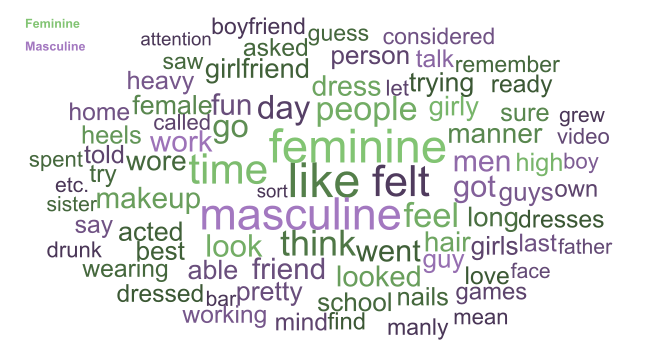
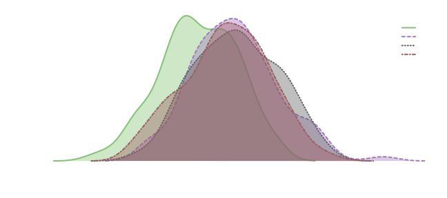

Introduction to Text Classification
Source:vignettes/text_classification.Rmd
text_classification.RmdWorks through a text classification example.
Built with R 4.3.1 on October 07 2023
Data
First, we need to load in some text. We will be using supervised classification methods, which require text to be labeled in some way. Labels can range from manual codings (human classifications you’re trying to replicate) to contextual features such as source.
For this example, we have free-response text from a study in which participants were asked to recall a time when they behaved in either a feminine or masculine manner (osf.io/ra8zy). With these examples, we can train a classifier to predict whether a text is describing feminine or masculine behavior.
Load data
# download and load the data
data <- read.csv("https://osf.io/download/vyste")
# remove duplicate and empty texts
data <- data[data$phase == "Pre" & data$Recall_Text != "", ]Make a train-test split
The ultimate goal of our classifier may be to automatically label new text in the future. How well the classifier is able to do this depends in part on how similar those texts are to the training texts. The best case is that the new texts conceptually come from the same population of texts as our training sample. In that case, testing on a held-out portion of our sample can make for a guess at the classifier’s future performance.
# look at the class base-rates (by design, they are roughly even)
table(data$Recall) / nrow(data)
#>
#> Feminine Masculine
#> 0.495283 0.504717
# define a train sample by drawing 70% of each class
classes <- sort(unique(data$Recall))
train_ids <- unlist(lapply(classes, function(class) {
class_ids <- which(data$Recall == class)
sample(class_ids, length(class_ids) * .7)
}), use.names = FALSE)
# now you have two datasets with similar class distributions
data.frame(
rbind(table(data[-train_ids, "Recall"]), table(data[train_ids, "Recall"])),
total = c(nrow(data) - length(train_ids), length(train_ids)),
row.names = c("test", "train")
)
#> Feminine Masculine total
#> test 32 33 65
#> train 73 74 147Process texts
Processing text is the process of deriving features from it. One of the most straightforward ways to do this is extracting and counting single words (unigrams), which results in a document-term matrix.
Words vary in meaning and quality as cues, so there are two common exclusion heuristics to help address this: Stop word removal excludes function words, which are high-frequency but often less meaningful words, and a document-count minimum excludes words that are sufficiently rare in the given set.
library(lingmatch)
# lma_dict() in the second position excludes function words
# dc.min excludes terms with document-frequencies less than or equal to the set value
dtm <- lma_dtm(data$Recall_Text, lma_dict(), dc.min = 5)
# extract the test rows
# splitting after creating a dtm ensures features are consistent between splits,
# but be cognizant of information passing between splits (such as if you were to
# document weight before splitting)
test_dtm <- dtm[-train_ids, ]
dtm <- dtm[train_ids, ]Train a classifier
Training a classifier in this case generally involves learning class-associated weights for terms, with “learning” potentially being as simple as calculating differences.
Term-based classifier
A basic classifier could use difference in document counts (binary frequencies) between classes to associate terms with each class. What results from this training is a dictionary with a category for each class, containing class-related terms.
# calculate differences in binary document counts (probabilities) between classes
feminine_texts <- data[train_ids, "Recall"] == "Feminine"
term_diffs <- colMeans(dtm[feminine_texts, ] != 0) -
colMeans(dtm[!feminine_texts, ] != 0)
# make a dictionary from the 40 most differing terms for each class
dict <- list(
Feminine = sort(term_diffs, TRUE)[1:40],
Masculine = -sort(term_diffs)[1:40]
)The dictionary contains the learned word-associations which will be used later to classify texts. We can inspect these for a sense of which terms are most important.
# words sized by frequency, colored by associated gender,
# and shaded by absolute difference
library(wordcloud)
library(splot)
terms <- unlist(lapply(dict, names), use.names = FALSE)
wordcloud(
terms, sqrt(colSums(dtm[, terms])),
scale = c(4, 1),
min.freq = 0, random.order = FALSE,
random.color = FALSE, rot.per = 0, ordered.colors = TRUE, fixed.asp = FALSE,
colors = splot.color(
-abs(term_diffs[terms]),
rep(names(dict), vapply(dict, length, 0))
)
)
legend(
"topleft",
legend = names(dict), text.col = splot.color(),
text.font = 2, bty = "n"
)
Naïve Bayes classifier
The Bernoulli Naïve Bayes classifier uses the same information, but will often smooth the probabilities.
library(naivebayes)
weights_nb <- bernoulli_naive_bayes(
(dtm != 0) * 1, data[train_ids, "Recall"],
laplace = 1
)
# what's returned is just the smoothed, conditional probability of each term
laplace <- 1
rbind(
manual = tapply(dtm[, "dress"] != 0, data[train_ids, "Recall"], function(x) {
(sum(x) + laplace) / (length(x) + laplace * 2)
}),
package = weights_nb$prob1["dress", ]
)
#> Feminine Masculine
#> manual 0.1733333 0.05263158
#> package 0.1733333 0.05263158Decision Tree classifier
Decision trees (learned by a recursive partitioning algorithm) are similar to the previous methods, but consider conditional differences in terms.
library(rpart)
library(rpart.plot)
weight_dtree <- rpart(data[train_ids, "Recall"] ~ ., as.data.frame(as.matrix(dtm)))
# default settings often select very few features,
# making these models particularly interpretable
rpart.plot(
weight_dtree,
extra = 2, mar = c(0, 0, 0, 0),
branch.col = "white", split.box.col = "black", split.col = "white",
nn.box.col = "black", nn.col = "white", space = 2
)Support Vector Machine classifier
There are many many other types of classifiers, many of which are based on essentially the same information, but have the potential to pick up on different features.
You can easily apply a range of other classifiers with the
caret package (see topepo.github.io/caret), which
also adds some parameter tuning.
Many models also have regularizing versions available (that effectively select features), which is particularly useful when there are many features, as is often the case with text.
Neural Network classifiers
Neural Networks are particularly flexible in terms of input, so they offer a way to use sequence information (getting away from a bag-of-words approach).
Keras is a framework for setting up neural models. The
package is an interface to Python, so some additional setup may be
required on your system, though it should be handled automatically (see
keras.rstudio.com).
Basic model
library(keras)
# process texts in the same way, but add tokens.only = TRUE to preserve sequence
# information
tokenized <- lma_dtm(data$Recall_Text, lma_dict(), dc.min = 5, tokens.only = TRUE)
# specify your layers
weights_neural <- keras_model_sequential(list(
# this set of layers translates input sequences of word indices to
# small embeddings, which are learned on the fly,
# then averages over the set of embeddings for a single text-centroid vector
layer_embedding(input_dim = length(tokenized$tokens) + 1, output_dim = 16),
layer_global_average_pooling_1d(),
# these are more or less arbitrary layers that can be played with more freely
layer_dense(units = 16, activation = "relu"),
layer_dropout(rate = 0.5),
# this is the final prediction layer, which converts the previous arbitrary layers
# to a binary classification
layer_dense(units = 1, activation = "sigmoid")
))
# then compile the model (this changes the weights_neural object)
compile(
weights_neural,
loss = "binary_crossentropy",
optimizer = "adam", metrics = "accuracy"
)
# and train the model on the training sample
fit(
weights_neural,
pad_sequences(tokenized$indices[train_ids], max(tokenized$WC)),
as.integer(feminine_texts),
epochs = 40, verbose = FALSE
)Pre-trained embeddings model
We can also use pre-trained embeddings, and instead of simply averaging over all words, we can first use a convolution layer to calculated weighted sums over word windows:
# load a set of pre-trained embeddings, with unrecognized terms added with
# weights of 0
space <- lma_lspace(names(tokenized$tokens), "glove", fill.missing = TRUE)
weights_neural_glove <- keras_model_sequential(list(
# this layer contains the loaded embeddings, which will not be adjusted
# during training
layer_embedding(
input_dim = nrow(space) + 1, output_dim = ncol(space),
input_length = max(tokenized$WC), trainable = FALSE,
weights = list(rbind(numeric(ncol(space)), space))
),
# this layer convolves (calculates weighted sums) over the
# embeddings vectors within a window (set by kernel_size)
layer_conv_1d(filters = 16, kernel_size = 5, activation = "relu"),
# same final layers as the initial model
layer_global_average_pooling_1d(),
layer_dense(units = 16, activation = "relu"),
layer_dropout(rate = 0.5),
layer_dense(units = 1, activation = "sigmoid")
))
compile(
weights_neural_glove,
loss = "binary_crossentropy",
optimizer = "adam", metrics = "accuracy"
)
fit(
weights_neural_glove,
pad_sequences(tokenized$indices[train_ids], max(tokenized$WC)),
as.integer(feminine_texts),
epochs = 40, verbose = FALSE
)Apply and Assess classifiers
Now, we can feed the previously trained weights into their classifiers (or calculate predictions manually), then measure accuracy (percent of real test labels guessed correctly).
# prepare the testset index sequences for the neural predictions
test_sequences <- pad_sequences(tokenized$indices[-train_ids], max(tokenized$WC))
# get predicted labels from each model
predictions <- data.frame(
terms = classes[max.col(lma_termcat(test_dtm, dict))],
bayes = predict(weights_nb, (test_dtm != 0) * 1),
dtree = predict(weight_dtree, as.data.frame(as.matrix(test_dtm)), "class"),
svm = predict(weights_svm, as.matrix(test_dtm)),
neural = classes[
(predict(weights_neural, test_sequences, verbose = FALSE) < .5) + 1
],
neural_glove = classes[
(predict(weights_neural_glove, test_sequences, verbose = FALSE) < .5) + 1
]
)
# when you have multiple classifiers, you can also add an ensemble classifier based
# on them by, for example, taking the most-predicted class
predictions$ensemble <- classes[(rowMeans(predictions == classes[1]) < .5) + 1]
# overall accuracies
data.frame(accuracy = colMeans(predictions == data[-train_ids, "Recall"]))
#> accuracy
#> terms 0.7076923
#> bayes 0.7692308
#> dtree 0.7846154
#> svm 0.8153846
#> neural 0.7692308
#> neural_glove 0.8000000
#> ensemble 0.8615385Testing decisions
The examples so far have taken a simple, default approach to processing texts, but often there is little reason behind each processing decisions. In such cases, parameters can be selected empirically by trying each option and measuring accuracy of the model within sample.
Weight schemes
For example, we might see if keeping or excluding stop words is best with different weighting schemes in the term-based model:
# list every combination of term and document weights
weights <- c("pmi", "ppmi", as.character(outer(
c("binary", "log", "sqrt", "count", "amplify"),
c(
"dflog", "entropy", "ppois", "dpois", "dfmlog", "dfmax", "df", "idf",
"ridf", "normal"
),
paste,
sep = "-"
)))
# set up an empty matrix for results
weight_accuracies <- matrix(
numeric(length(weights) * 2),
ncol = 2,
dimnames = list(weights, c("keep", "exclude"))
)
# loop through each stop word option
for (exclude in c(TRUE, FALSE)) {
# reprocess texts with or without stop words removed
tdtm <- lma_dtm(
data[train_ids, "Recall_Text"], if (exclude) lma_dict() else NULL,
dc.min = 5
)
# loop through each weighting scheme
for (weight in weights) {
# apply the weighting scheme
wdtm <- lma_weight(tdtm, weight)
# calculate mean differences between classes for each term
wterm_diffs <- colMeans(wdtm[feminine_texts, ]) - colMeans(wdtm[!feminine_texts, ])
# make dictionaries from the top 40 terms in each class
# then calculate category scores (applying the same weight
# scheme and taking the biggest as the class prediction)
wterm_preds <- classes[max.col(lma_termcat(wdtm, list(
Feminine = sort(wterm_diffs, TRUE)[1:40],
Masculine = -sort(wterm_diffs)[1:40]
)))]
# add the resulting accuracy to the set of results
weight_accuracies[weight, exclude + 1] <-
mean(wterm_preds == data[train_ids, "Recall"])
}
}
# note that dark = TRUE makes the text white, so you might need to remove it
splot(
weight_accuracies ~ weights,
type = "point", title = FALSE,
leg.title = "Stop words", laby = "Overall Accuracy", labx = "Weight Scheme",
lpos = "bottomleft", note = FALSE, sort = TRUE, mai = c(1.7, .5, 0, 0), dark = TRUE
)
Train-test splits
A more general consideration when using random train-test splits is that results will probably vary a bit between resplits, so close results may not be reliably different.
For example, we might compare the performance of the simpler models. Depending on the data and model, this can be slow, so we’ll also parallelize it:
library(parallel)
# make a full dtm
full_dtm <- lma_dtm(data$Recall_Text, lma_dict(), dc.min = 5)
# make clusters
cl <- makeCluster(detectCores() - 2)
# load objects into clusters
clusterExport(cl, c("classes", "data", "full_dtm"))
Model_Accuracies <- do.call(rbind, parLapply(cl, seq_len(100), function(i) {
# reload packages each time
library(lingmatch)
library(naivebayes)
library(rpart)
library(caret)
# draw a new set of training ids
ids <- unlist(lapply(classes, function(class) {
class_ids <- which(data$Recall == class)
sample(class_ids, length(class_ids) * .7)
}), use.names = FALSE)
train_dtm <- full_dtm[ids, ]
feminine_texts <- data[ids, "Recall"] == "Feminine"
test_dtm <- full_dtm[-ids, ]
# train models
terms <- colMeans(train_dtm[feminine_texts, ] != 0) -
colMeans(train_dtm[!feminine_texts, ] != 0)
bayes <- bernoulli_naive_bayes(
(train_dtm != 0) * 1, data[ids, "Recall"],
laplace = 1
)
dtree <- rpart(data[ids, "Recall"] ~ ., as.data.frame(as.matrix(train_dtm)))
svm <- train(as.matrix(train_dtm), data[ids, "Recall"], "svmLinear3")
# test models
colMeans(data.frame(
terms = classes[max.col(lma_termcat(
test_dtm, list(sort(terms, TRUE)[1:40], -sort(terms)[1:40])
))],
bayes = predict(bayes, (test_dtm != 0) * 1),
dtree = predict(dtree, as.data.frame(as.matrix(test_dtm)), "class"),
svm = predict(svm, test_dtm)
) == data[-ids, "Recall"])
}))
stopCluster(cl)
data.frame(Average = colMeans(Model_Accuracies))
#> Average
#> terms 0.6810769
#> bayes 0.7193846
#> dtree 0.7223077
#> svm 0.7133846
splot(Model_Accuracies, title = FALSE, leg.title = "Model", dark = TRUE)